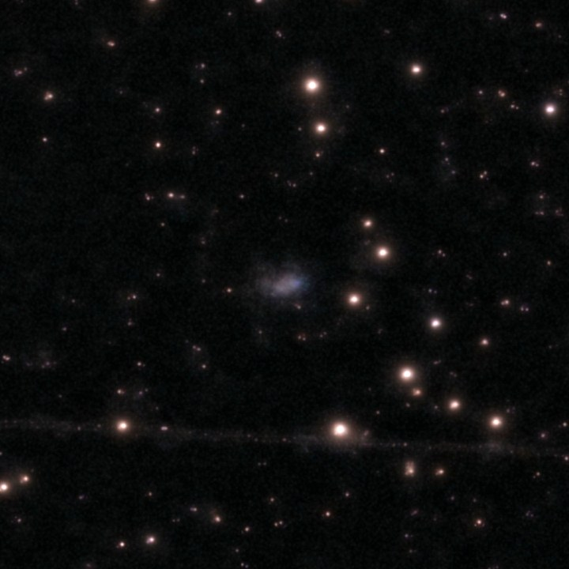
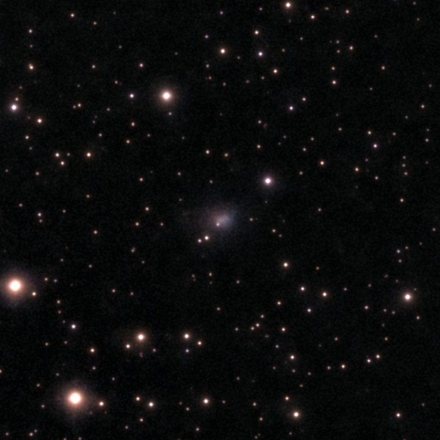
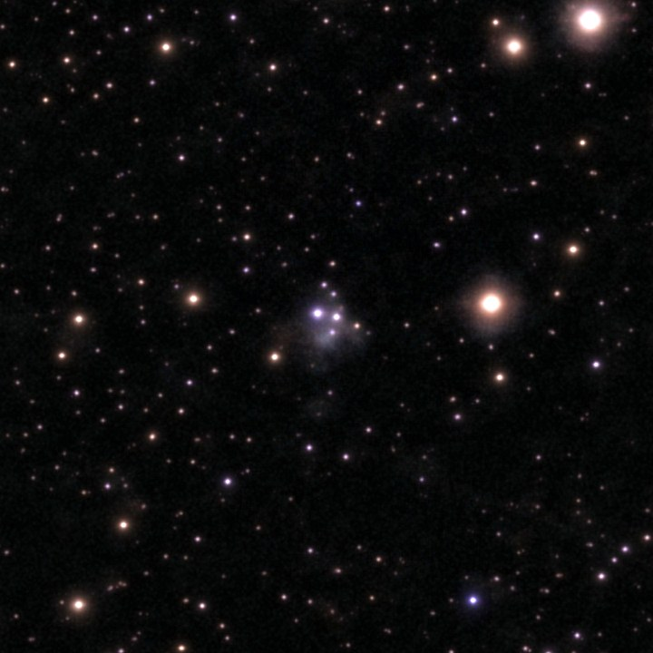
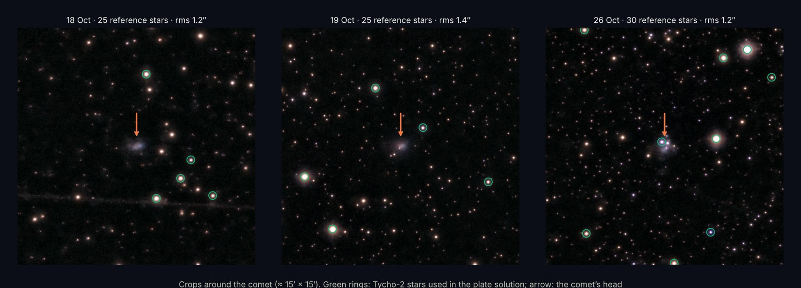
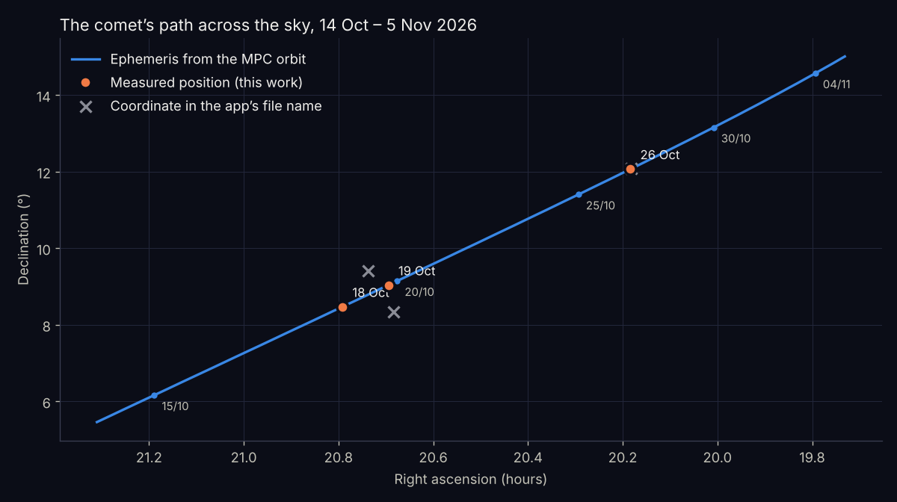
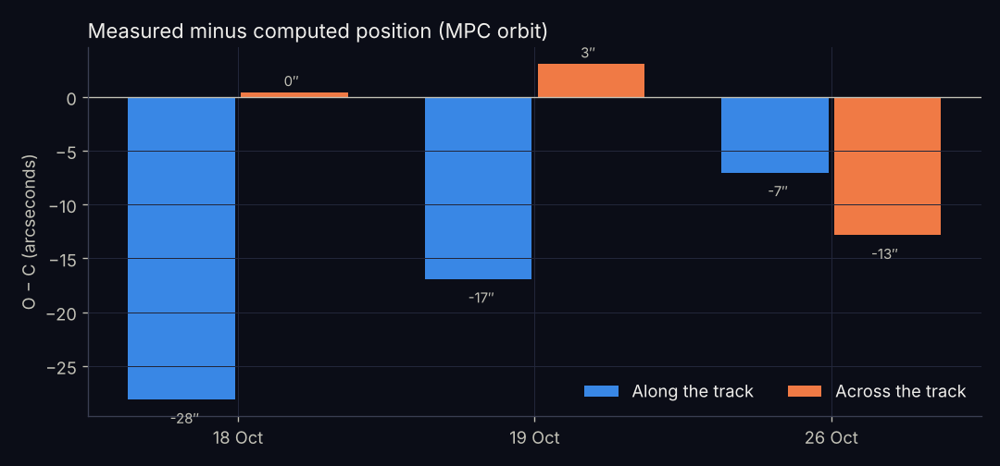
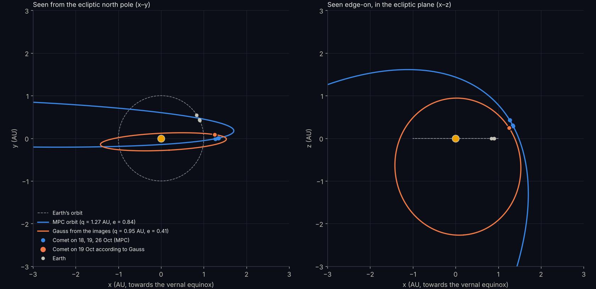
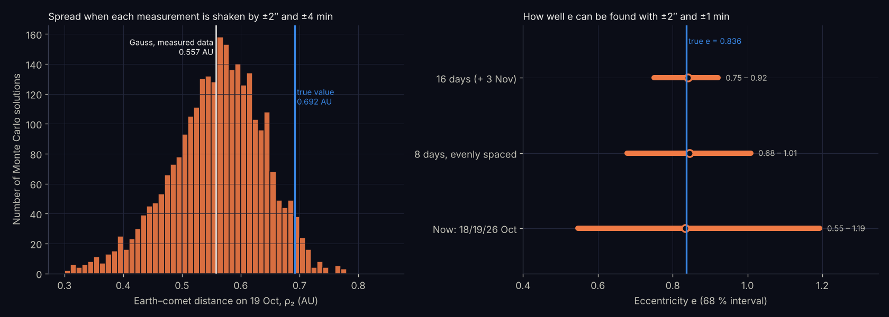

The main results
Three eVscope2 images from 18, 19 and 26 October 2026 were plate-solved against Tycho-2 with 25–30 reference stars and a residual scatter of 1.0–1.4″. The comet’s positions lie 8–28″ from the ephemeris of the MPC orbit, but only 0.4–3″ across the track on 18 and 19 October.
Gauss’s method gets the orbital plane roughly right (Ω = 2.6° against 1.5°, i = 83° against 96°), but not the shape of the orbit. The cause is the length of the arc, not the method: with only 8 days, a good orbit needs positions better than 2″ and times better than 1 minute, and the app’s time stamps are uncertain by 3–7 minutes.
Three evenings in October
All three images are eVscope2 stacks from Djursland, Denmark (56.5° N, 10.8° E), saved as the app’s annotated 2800 × 2800 pixel export. The time in the file name is UTC and is taken to be the end of the stack, so the mid-time is the file name minus half the integration time.

1
2
3The comet is a diffuse, bluish coma about 1′ across with no clear central condensation. On 26 October four stars lie on top of the coma, which makes centring harder.

Plate solution against Tycho-2
The coordinates in the app’s file names cannot be used: on 18 and 19 October they lie 0.7–1.0° from the comet, outside the field of view. All positions were therefore measured with an independent plate solution against Tycho-2 (the Big Sky catalogue), with the stars’ proper motions carried forward to 2026.8.
Find the stars
DAOStarFinder finds 850–1870 stars in each image, out to a radius of 0.44 of the image width, which avoids the text around the edge.
Match the pattern
The brightest stars are matched against the catalogue by searching over scale, rotation and offset. The scale came out at 0.849″ per pixel.
Fit the transformation
A six-parameter affine transformation is fitted by least squares to 25–30 stars. The residual scatter is 1.0–1.4″.
Measure the coma
Stars are masked and an elliptical 2D Gaussian with background is fitted to the coma. Its centre gives the comet’s position.
| Date 2026 | Mid-time (UTC) | RA (J2000) | Dec (J2000) | Stars | rms |
|---|---|---|---|---|---|
| 18 Oct | 17:56:43 | 20h 47m 30.57s | +8° 28′ 10.1″ | 25 | 1.0″ |
| 19 Oct | 19:09:06 | 20h 41m 40.79s | +9° 02′ 05.5″ | 25 | 1.4″ |
| 26 Oct | 18:11:07 | 20h 11m 02.58s | +12° 03′ 57.6″ | 30 | 1.2″ |

The field is about 35′ across. The image of 18 October is rotated by about 16° relative to the other two, because the eVscope2 is on an alt-azimuth mount with no field derotator.
Measured against computed: O − C
The measured positions were compared with a topocentric ephemeris computed from the MPC orbital elements (MPEC 2026-TP0, epoch 23 October 2026), with light-time correction. The difference O − C is split into components along and across the comet’s motion.

- Across the track the difference is 0.4″ and 3.1″ on 18 and 19 October. That matches the accuracy of the plate solution and shows that the astrometry is sound.
- Along the track the comet lags by 28″, 17″ and 7″. At a rate of 3.8, 3.6 and 2.4″ per minute, that means the effective times are 7.4, 4.7 and 2.9 minutes earlier than assumed. It is the time stamp of the stack, not the measurement, that is uncertain.
- On 26 October there is also a 13″ difference across the track. It is probably caused by the stars on top of the coma or by an asymmetric coma; it returned with three different centring methods.
Gauss’s method
Gauss’s method finds the comet’s distance ρ at the three times from the direction vectors L̂i and the observer’s heliocentric position Ri (the Earth plus the geocentric position of Marshøj). The middle distance r2 from the Sun is a root of Gauss’s equation of eighth degree:
Lagrange’s f and g functions are then refined with universal variables and light-time correction until the solution stops changing. The velocity follows from
The code was checked by feeding it the MPC ephemeris’ own directions at the same times. It recovers the MPC orbit to every decimal (q = 1.26511 AU, e = 0.83618, i = 95.7919°).
The orbit from three images
| Quantity | Gauss, own images | MPC (MPEC 2026-TP0) |
|---|---|---|
| Earth–comet distance ρ1 / ρ2 / ρ3 (AU) | 0.543 / 0.557 / 0.662 | 0.674 / 0.692 / 0.822 |
| Sun–comet distance r2 (AU) | 1.279 | 1.373 |
| Heliocentric speed v2 (km/s) | 29.0 | 34.3 |
| Perihelion distance q (AU) | 0.95 | 1.265 |
| Semi-major axis a (AU) | 1.62 | 7.72 |
| Eccentricity e | 0.41 | 0.836 |
| Inclination i | 82.8° | 95.79° |
| Ascending node Ω | 2.6° | 1.47° |
| Argument of perihelion ω | 94.4° | 47.07° |
| Perihelion time T | 9 Jan 2027 | 27 Nov 2026, 04:16 TT |
| Period P (years) | 2.1 | 21.46 |

The orientation of the orbital plane (Ω and i) is roughly right, so the comet’s motion almost perpendicular to the ecliptic shows up clearly. The distance, however, is 19 % too small. The speed then comes out too low, and the orbit becomes a short, nearly circular ellipse instead of the long Halley-type orbit.
Why 8 days is not enough
A Monte Carlo run with 3000 repetitions, shaking each position by ±2″ and each time by ±4 min, gives ρ2 = 0.44–0.63 AU and e = 0.39–0.59 (68 % intervals). The true ρ2 = 0.692 AU lies just outside the interval, because the systematic 13″ offset on 26 October is larger than the assumed 2″.

The right panel is a simulation with perfect MPC positions plus ±2″ and ±1 min. Even with data that good, the present 8 days give e = 0.55–1.19, so an ellipse cannot be told from a hyperbola. Three evenly spaced nights over 8 days give 0.68–1.01, and a 16-day arc (an image around 3 November) gives 0.75–0.92 and ρ2 within ±2.5 %.
In practice Gauss’s method measures the curvature of the track. According to the MPC orbit, the position on 19 October lies only 100″ from the great circle through the other two, and according to my measurements 105″. Those 5″ are what shift the distance by 19 %.
Next steps
The eVscope2 astrometry is good enough for orbit determination: the plate solutions hold to 1–1.4″, and the positions are only 0.4–3″ off across the track. The limiting factor is the short 8-day arc together with uncertain times.
- Download the raw data from the app (manifest.json with obs_start and obs_end) for the three nights. The stack’s mid-time is then known to the second, and the 7–28″ offset along the track can be removed.
- Take an image around 3 November, preferably several in a row. The comet will then be at RA 19h 48m, Dec +14.5°, 83° from the Sun; on 12 November at RA 19h 32m, Dec +16.6°, 73° from the Sun.
- Avoid fields where stars cover the coma, or take two stacks half an hour apart so that the comet has moved off the stars.
- Use the longest arc for Gauss (first, middle and last night), and check against the other nights.